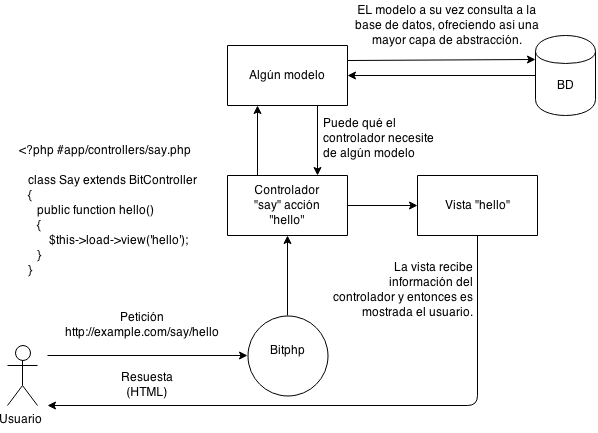

El servicio MVC/HMVC de BitPHP¶
“El modelo–vista–controlador (MVC) es un patrón de arquitectura de software que separa los datos y la lógica de negocio de una aplicación de la interfaz de usuario y el módulo encargado de gestionar los eventos y las comunicaciones. Para ello MVC propone la construcción de tres componentes distintos que son el modelo, la vista y el controlador, es decir, por un lado define componentes para la representación de la información, y por otro lado para la interacción del usuario.” - Modelo–vista–controlador. (2015, 28 de abril). Wikipedia, La enciclopedia libre. Fecha de consulta: 02:02, abril 29, 2015 desde http://es.wikipedia.org/w/index.php?title=Modelo%E2%80%93vista%E2%80%93controlador&oldid=82086651.
El modelo¶
El modelo es el encargado de proveer la información necesaria en la aplicación, por ejemplo, en un sistema escolar el modelo de la aplicación se encargaría de consultar la base de datos para obtener los datos de los alumnos.
El controlador¶
Esta parte es la encargada de la lógica, y por lo general responde a solicitudes envidas por el usuario. El controlador a su vez puede invocar funciones del modelo para obtener información, el controlador también es el encargado de gestionar las vistas de la aplicación.
Las vistas¶
¿Como implementa MVC bitphp?¶
La arquitectura MVC en general es fácil de entender y de llevar acabo, podemos resumir dicho proceso en el siguiente diagrama:
Inicializando aplicaciones MVC¶
El servicio MVC se inicia desde el fichero index.php de la siguiente manera:
<?php
/**
* Carga los archivos base de bitphp
*/
require('bit.php');
/**
* Carga una aplicación MVC
*/
$app = $bitphp->loadMvcServer();
/**
* Inicia la aplicación
*/
$app->run();
?>
Hecho esto podrás entrar desde el navegador e ir a la dirección de bitphp, puede qué aparezca un error indicando qué falta el archivo de configuración, solo debes generarlo y guardarlo en la carpeta de la aplicación (ver el archivo de configuración) ¡y con esto el servicio MVC esta listo para funcionar!